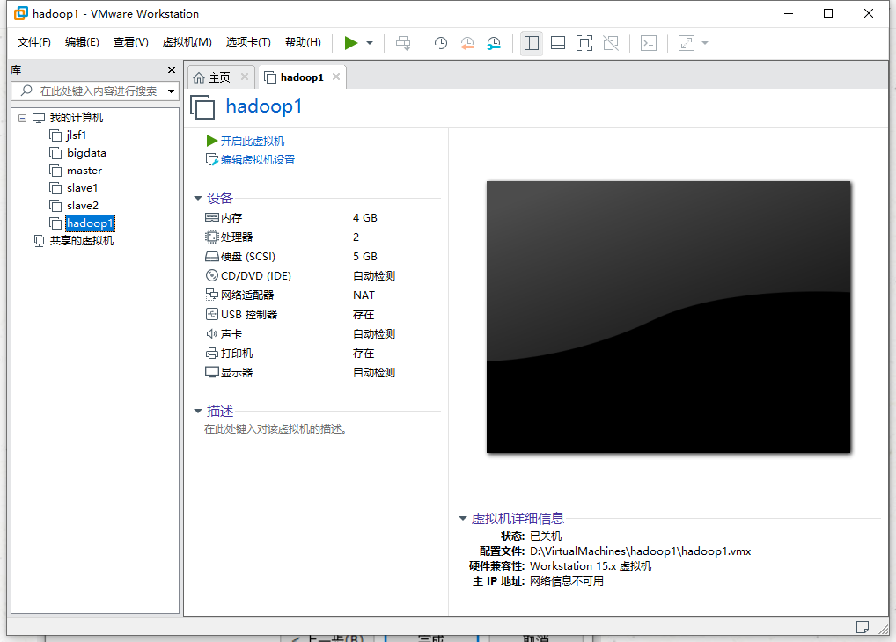
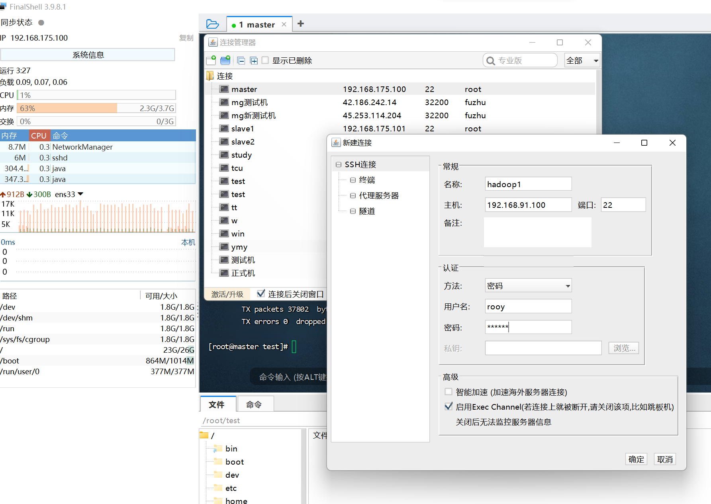

大数据系统搭建与应用笔记¶
2023fall 21级计算机与科学专业 大数据方向
Part 1 系统搭建¶
前言¶
系统搭建部分，会简单介绍不同平台搭建大数据系统所需要的环境，包括（机房教室实体机、PC虚拟机、docker），目前用到的工具有：hadoop，spark，anaconda（后续会添加）；上学期大数据技术原理与应用这门课，目前在PC虚拟机中装有hadoop的环境，这里也会简单提到。
在这个笔记中，工具安装在了/usr/local/developers中，编写的两个系统文件分别是/etc/profile和～/.bashrc，在配置过程中大家注意自己实际的安装路径
使用mac系统的同学如果没有特别标注，则操作基本一致可以同样参考，如果是arm系列芯片的同学，需要相应的安装包或者遇到问题可以联系作者
Section 1 集群的搭建¶
在系统搭建中，依旧采用三台实体机/虚拟机/容器群组，在这个Section中会介绍如何搭建集群，包括集群创建、网络配置，主机映射、SSH免密。
| linux系统 | 版本 | |
|---|---|---|
| PC虚拟机 | Cent OS | 7 |
| 机房主机 | Deepin | 20.4 |
| Docker 容器 | Cent OS | latest（8） |
三台主机相应的角色：

1.1 创建自己的集群¶
- 机房主机
机房主机是小组内的实体机，在课程中已经安装相应的Linux系统，不需要额外配置
- PC虚拟机
(1)单虚拟机的配置
虚拟机软件使用的是VMware




点击reboot后，虚拟机就创建完毕。为了操作上的简便，先使用这一台虚拟机进行网络配置，同时进行时间同步
(2)虚拟机克隆和配置
由于使用的是集群模式，需要多台节点，对此我们只需要 克隆刚刚配置好的hadoop1即可
准备：关闭后，克隆虚拟机
按此操作克隆出两个虚拟机，克隆完毕，需要修改内存上限为（2G或1G） 分别在hadoop2和hadoop3进行以下操作：
(1) hadoop2
修改网卡配置
[root@hadoop1 ~]# vi /etc/sysconfig/network-scripts/ifcfg-ens33
修改在hadoop1中添加的内容
IPADDR=192.168.91.101 //hadoop1 的用户号为100，hadoop2修改为101
NETMASK=255.255.255.0
GATEWAY=192.168.91.2
DNS1=114.114.114.114
DNS2=8.8.8.8
修改主机名
[root@hadoop1 ~]# vi /etc/hostname
修改为hadoop2
重启虚拟机
[root@hadoop1 ~]# reboot
(2) hadoop3
操作与hadoop2一致，将IP地址中的用户号修改为102，主机名修改为hadoop3，即可
- Docker 容器
（1）搭建前工作
安装docker直接按照教程安装即可,查看docker是否安装成功，有版本号即可
```shell
(base) ➜ ~ docker -v
Docker version 24.0.6, build ed223bc
```
拉取镜像CentOS
通过此命令拉取最新的centos8的镜像，使用`docker pull`命令默认是`latest`版本
```bash
(base) ➜ ~ docker pull centos
```
**启动centos容器**
```bash
docker run -itd --name hadoop1 -p 2201:22 -p 8088:8088 -p 9000:9000 -p 50070:50070 -p 4040:4040 -p 7070:7070 -p 8080:8080 --privileged=true centos:latest /sbin/init
```
> 注意：
>
> -p:表示端口映射，这很重要，可以方便本机在外部访问web网页 需要设置容器和本机的相关端口映射,我们要为spark和hadoop预留出端口
> -i:表示运行的容器
> -t：表示容器启动后会进入其命令行。加入这两个参数后，容器创建就能登录进去。即分配一个伪终端。
> -d: 在run后面加上-d参数,则会创建一个守护式容器在后台运行（这样创建容器后不会自动登录容器，如果只加-i -t两个参数，创建后就会自动进去容器）。
> –name :为创建的容器命名。
> –privileged：为true时赋予容器内root用户真正的root权限，否则root为普通用户,默认为flase
> /sbin/init: 使容器启动后可以使用systemctl方法
-
容器配置
通过如下命令进入容器,containerID也可以填容器的名称
docker exec -it containerID /bin/bash 例如： docker exec -it hadoop/bin/bash -
更换yum源
进入
yum配置目录，/etc/yum.repos.d(base) [root@hadoop1 /]# cd /etc/yum.repos.d (base) [root@hadoop1 yum.repos.d]# ls CentOS-Linux-AppStream.repo CentOS-Linux-FastTrack.repo CentOS-Linux-BaseOS.repo CentOS-Linux-HighAvailability.repo CentOS-Linux-ContinuousRelease.repo CentOS-Linux-Media.repo CentOS-Linux-Debuginfo.repo CentOS-Linux-Plus.repo CentOS-Linux-Devel.repo CentOS-Linux-PowerTools.repo CentOS-Linux-Extras.repo CentOS-Linux-Sources.repo修改以下文件
[1] CentOS-Linux-BaseOS.repo
[baseos] name=CentOS Linux $releasever - BaseOS #mirrorlist=http://mirrorlist.centos.org/?release=$releasever&arch=$basearch&repo=BaseOS&infra=$infra #baseurl=http://mirror.centos.org/$contentdir/$releasever/BaseOS/$basearch/os/ baseurl=https://vault.centos.org/centos/$releasever/BaseOS/$basearch/os/ gpgcheck=1 enabled=1 gpgkey=file:///etc/pki/rpm-gpg/RPM-GPG-KEY-centosofficial[2] CentOS-Linux-AppStream.repo
[appstream] name=CentOS Linux $releasever - AppStream #mirrorlist=http://mirrorlist.centos.org/?release=$releasever&arch=$basearch&repo=AppStream&infra=$infra #baseurl=http://mirror.centos.org/$contentdir/$releasever/AppStream/$basearch/os/ baseurl=https://vault.centos.org/centos/$releasever/AppStream/$basearch/os/ gpgcheck=1 enabled=1 gpgkey=file:///etc/pki/rpm-gpg/RPM-GPG-KEY-centosofficial[3] CentOS-Linux-Extras.repo
[extras] name=CentOS Linux $releasever - Extras #mirrorlist=http://mirrorlist.centos.org/?release=$releasever&arch=$basearch&repo=extras&infra=$infra #baseurl=http://mirror.centos.org/$contentdir/$releasever/extras/$basearch/os/ baseurl=https://mirrors.aliyun.com/centos/8-stream/extras/$basearch/os/ gpgcheck=1 enabled=1 gpgkey=file:///etc/pki/rpm-gpg/RPM-GPG-KEY-centosofficial配置完成后，使用
yum命令下载软件，以vim示例yum install -y package-name example： yum install -y vim -
安装Java环境，见Section 2 软件安装部分
-
创建集群需要的容器
- 将hadoop1导出到镜像，并利用该镜像创建两个相同容器
导出镜像
docker commit hadoop1 centos_bigdata创建相同容器
docker run -itd --name hadoop2 -p 2202:22 -p 50090:50090 --privileged=true centos_bigdata /sbin/init docker run -itd --name hadoop3 -p 2203:22 --privileged=true centos_bigdata /sbin/init -
修改主机名
创建的容器进入之后root之后@的是容器id,在容器内使用
hostname hadoop1hadoop2/3同理，可以对其主机名进行修改，ctrl+p+q之后即可生效
1.2 网络配置¶
-
机房主机¶
相比于其他两种方案学校虚拟机中配置网络的方法，机房主机的配置更加简单，只需要在设置 ->网络中选择有线网卡，将自动获取IPV4修改为手动，配置如下：
IP地址 ：10.10.98.xxx （后面的用户号，填写老师分配好的ip地址）
子网掩码：255.255.255.0
网关：10.10.98.0
配置完毕后在终端输入：ifconfig或者ip addr查看是否修改成功
-
PC虚拟机¶
打开该虚拟机的虚拟网络编辑器：
可以得到以下信息
IPADDR=192.168.91.100 //根据子网IP和子网掩码，点分十进制的第4部分的用户号可以自由填写
NETMASK=255.255.255.0
GATEWAY=192.168.91.2
DNS1=114.114.114.114
DNS2=8.8.8.8
配置一个固定的IP地址： 在linux操作系统中：所有的软件配置文件，都是以文件方式进行出现，也就意味着，配置一个固定ip地址需要一个网卡文件 使用以下命令
vi /etc/sysconfig/network-scripts/ifcfg-ens33
! 注意：如果是ONBOOT = no 的话需要改成yes，在配置文件下面加入
IPADDR=192.168.91.100
NETMASK=255.255.255.0
GATEWAY=192.168.91.2
DNS1=114.114.114.114
DNS2=8.8.8.8
并且重启网络：
service network restart
systemctl restart network.service
ip addr ----查询ip地址
检测网络的是否连通：
[root@hadoop1 ~]# ping www.baidu.com
PING baidu.com (39.156.66.10): 56 data bytes
64 bytes from 39.156.66.10: icmp_seq=0 ttl=50 time=11.398 ms
64 bytes from 39.156.66.10: icmp_seq=1 ttl=50 time=10.643 ms
64 bytes from 39.156.66.10: icmp_seq=2 ttl=50 time=11.293 ms
64 bytes from 39.156.66.10: icmp_seq=3 ttl=50 time=11.336 ms
^C
--- baidu.com ping statistics ---
15 packets transmitted, 15 packets received, 0.0% packet loss
round-trip min/avg/max/stddev = 9.568/11.211/11.865/0.511 ms
使用netstat方式查看端口是否存在（先安装见..)：
发现端口22在使用，便可以使用FinalShell中进行连接

-
Docker 容器¶
-
三台服务器统一网段
安装hadoop需要保持服务器之间内网连通，而我们创建的三个容器：hadoop1、hadoop2、hadoop3；默认是放在bridge的网段的,默认是联通的，但是为了和其他不相关的容器区分开，建议还是创建一个新的网段让三台容器自己相连。在本机的终端使用该命令
查看docker 存在的网段
docker network ls(base) ➜ Downloads docker network ls NETWORK ID NAME DRIVER SCOPE 45c119b3d06f bridge bridge local 952e0cf633a5 host host local 7feb1ec58fe2 none null local创建名为bigdata的新网段
docker network create bigdata三台容器连入bigdata网段
docker network connect bigdata hadoop1 docker network connect bigdata hadoop2 docker network connect bigdata hadoop3断开三台容器与bridge的连接
docker network disconnect bridge hadoop1 docker network disconnect bridge hadoop2 docker network disconnect bridge hadoop3最后查看bigdata内的网段：以及三台机器的ip地址
docker network inspect bigdata(base) ➜ Downloads docker network inspect bigdata [ { "Name": "bigdata", "Id": "febdc8770f4e6ec76d0d768f88a8aa2d25d069cb8324c7f9c364b17f3a0dd9f2", "Created": "2023-10-18T15:01:21.631179494Z", "Scope": "local", "Driver": "bridge", "EnableIPv6": false, "IPAM": { "Driver": "default", "Options": {}, "Config": [ { "Subnet": "172.19.0.0/16", "Gateway": "172.19.0.1" } ] }, "Internal": false, "Attachable": false, "Ingress": false, "ConfigFrom": { "Network": "" }, "ConfigOnly": false, "Containers": { "2f35ec49c3c2bc21a00db355aa9feb87dcd615fbfcecae56e5561f1643755199": { "Name": "hadoop1", "EndpointID": "60bdeba3dd3178e589ef354712972ffcea73e7816031394ea2f1ee81ac39bda3", "MacAddress": "02:42:ac:13:00:02", "IPv4Address": "172.19.0.2/16", "IPv6Address": "" }, "ad1cef819c3a0d364eca9e859a01599f03323f306abae87eb2f327b2e8e7656d": { "Name": "hadoop3", "EndpointID": "7b81a575161c774dc75036f4018352c1c733c517d27e014f5ae0681bfb7a74b8", "MacAddress": "02:42:ac:13:00:04", "IPv4Address": "172.19.0.4/16", "IPv6Address": "" }, "d5a77405dadb67a978014e0164318453a95cb40d11fa09558bd1bc7773748145": { "Name": "hadoop2", "EndpointID": "3de1e2007ef806c5d1fabdada45c887ed204864058c1dd014e6493cdfbc14618", "MacAddress": "02:42:ac:13:00:03", "IPv4Address": "172.19.0.3/16", "IPv6Address": "" } }, "Options": {}, "Labels": {} } ]注意：这就是三台容器的ip地址'"IPv4Address": "172.19.0.x/16"，因为docker的centos8的镜像是不带防火墙的，可以省去关闭防火墙步骤
1.3 地址映射主机名¶
由于三个场景使用的都是Linux，所以在这部分的操作都是相同的
- 首先要知道每台主机的IP地址，以及它的hostname
#查看hostname
(base) [root@hadoop1 ~]# hostname
hadoop1
#查看ip地址
(base) [root@hadoop1 ~]# ip addr
1: lo: <LOOPBACK,UP,LOWER_UP> mtu 65536 qdisc noqueue state UNKNOWN group default qlen 1000
link/loopback 00:00:00:00:00:00 brd 00:00:00:00:00:00
inet 127.0.0.1/8 scope host lo
valid_lft forever preferred_lft forever
2: tunl0@NONE: <NOARP> mtu 1480 qdisc noop state DOWN group default qlen 1000
link/ipip 0.0.0.0 brd 0.0.0.0
3: ip6tnl0@NONE: <NOARP> mtu 1452 qdisc noop state DOWN group default qlen 1000
link/tunnel6 :: brd :: permaddr ec9:c943:920e::
24: eth0@if25: <BROADCAST,MULTICAST,UP,LOWER_UP> mtu 1500 qdisc noqueue state UP group default
link/ether 02:42:ac:13:00:02 brd ff:ff:ff:ff:ff:ff link-netnsid 0
inet 172.19.0.2/16 brd 172.19.255.255 scope global eth0
valid_lft forever preferred_lft forever
这个则是：inet 172.19.0.2
-
修改
/etc/host文件，每台都要操作一次vim /etc/hosts #在文件后添加 三台机器的ip和主机名 172.19.0.2 hadoop1 172.19.0.3 hadoop2 172.19.0.4 hadoop3 -
验证地址与主机名映射,使用
ping命令得到以下结果(base) [root@hadoop1 ~]# ping hadoop2 PING hadoop2 (172.19.0.3) 56(84) bytes of data. 64 bytes from hadoop2.bigdata (172.19.0.3): icmp_seq=1 ttl=64 time=1.29 ms 64 bytes from hadoop2.bigdata (172.19.0.3): icmp_seq=2 ttl=64 time=0.247 ms 64 bytes from hadoop2.bigdata (172.19.0.3): icmp_seq=3 ttl=64 time=0.377 ms ^C --- hadoop2 ping statistics --- 3 packets transmitted, 3 received, 0% packet loss, time 2017ms rtt min/avg/max/mdev = 0.247/0.638/1.291/0.465 ms (base) [root@hadoop1 ~]# ping hadoop3 PING hadoop3 (172.19.0.4) 56(84) bytes of data. 64 bytes from hadoop3.bigdata (172.19.0.4): icmp_seq=1 ttl=64 time=1.47 ms 64 bytes from hadoop3.bigdata (172.19.0.4): icmp_seq=2 ttl=64 time=0.174 ms 64 bytes from hadoop3.bigdata (172.19.0.4): icmp_seq=3 ttl=64 time=0.307 ms 64 bytes from hadoop3.bigdata (172.19.0.4): icmp_seq=4 ttl=64 time=0.336 ms ^C --- hadoop3 ping statistics --- 4 packets transmitted, 4 received, 0% packet loss, time 3087ms rtt min/avg/max/mdev = 0.174/0.572/1.472/0.523 ms
1.4 节点SSH免密¶
由于三个场景使用的都是Linux，所以在这部分的操作都是相同的
注意：在ssh连接时学校机房可能会报Permisson Denied 等等下文有列出来解决方案
-
安装ssh工具
-
设置root密码（PC虚拟机安装时默认用户就是root不用修改）
$ passwd root //设置root密码
//机房主机，默认时非root用户登陆
$ su - //进入root用户
- 在root用户下，进行免密配置
分别在hadoop1、hadoop2、hadoop3中依次进行以下操作
[root@hadoop1 ~]# ssh-keygen -t rsa
Generating public/private rsa key pair.
Enter file in which to save the key (/root/.ssh/id_rsa):
Enter passphrase (empty for no passphrase):
Enter same passphrase again:
Your identification has been saved in /root/.ssh/id_rsa.
Your public key has been saved in /root/.ssh/id_rsa.pub.
The key fingerprint is:
SHA256:7rTCj+LqM95Gk1nUniyf1Yy0NM1W7FAPR6slCTvDYGo root@hadoop1
The key's randomart image is:
+---[RSA 2048]----+
| . o + ++.o|
| . + * B o+.|
| . E + % = o.|
| + + + = = |
| + oSo . |
| = .o |
| . o o |
| o.o o+ . |
| o+*o..o+ |
+----[SHA256]-----+
[root@hadoop2 ~]# ssh-keygen -t rsa
Generating public/private rsa key pair.
Enter file in which to save the key (/root/.ssh/id_rsa):
Created directory '/root/.ssh'.
Enter passphrase (empty for no passphrase):
Enter same passphrase again:
Your identification has been saved in /root/.ssh/id_rsa.
Your public key has been saved in /root/.ssh/id_rsa.pub.
The key fingerprint is:
SHA256:C3azvXal3IjmRmD/FClkEmxzS17X8TMOCWRV/0OgvSM root@hadoop2
The key's randomart image is:
+---[RSA 2048]----+
| ....+.o.+.|
| = * = + +|
| . O + * +o|
| o + o = +|
| o.So E + o.|
| . o =o o o .|
| o..= = |
| =.* . |
| =o. |
+----[SHA256]-----+
[root@hadoop3 ~]# ssh-keygen -t rsa
Generating public/private rsa key pair.
Enter file in which to save the key (/root/.ssh/id_rsa):
Created directory '/root/.ssh'.
Enter passphrase (empty for no passphrase):
Enter same passphrase again:
Your identification has been saved in /root/.ssh/id_rsa.
Your public key has been saved in /root/.ssh/id_rsa.pub.
The key fingerprint is:
SHA256:iswVFWqHXhN4BaIT2mMD0EwfAc8KC+hw41lVbK5sGFg root@hadoop3
The key's randomart image is:
+---[RSA 2048]----+
|.=+.+.o+*+. |
|. oBE=.=+. |
|= +o% =++ |
|+=.*.* +.. |
|..+ +o.S |
| o.o+. |
| +.. |
| |
| |
+----[SHA256]-----+
可以看到生成的密钥已经存放在了/root/.ssh文件中，其中密钥是这个/root/.ssh/id_rsa.,公钥是这个/root/.ssh/id_rsa.pub
分别在hadoop1、hadoop2、hadoop3中依次进行以下操作,使得每台主机都存有各自的公钥
ssh-copy-id hadoop1
ssh-copy-id hadoop2
ssh-copy-id hadoop3
注意这里本机的公钥也需要拷贝，以上命令需要在三个容器中都执行
- 测试各主机相互免密
# ssh hadoop2
(base) [root@hadoop1 ~]# ssh hadoop2
Last login: Sun Oct 29 19:15:22 2023 from 172.19.0.2
(base) [root@hadoop2 ~]# exit
logout
Connection to hadoop2 closed.
# ssh hadoop3
(base) [root@hadoop1 ~]# ssh hadoop3
Last login: Sun Oct 29 19:15:29 2023 from 172.19.0.2
(base) [root@hadoop3 ~]# exit
logout
Connection to hadoop3 closed.
-
关于学校机房ssh连接问题
在使用学校机房在使用ssh连接时，可能会出现以下情况
Situation1: Permission denied, please try again. Situation2: ssh: connect to host example.com port 22: Permission denied我们需要修改一下关于
ssh配置文件/etc/ssh/sshd_config# 需要注意这个配置，如果是no需要修改为yes PermitRootLogin yes //是否允许root账户ssh登录 PubkeyAuthentication yes <==是否开启公钥验证 PasswordAuthentication yes <==是否允许密码验证由于身边没有
deepin的系统，但是印象中这几个配置默认时关闭的，所以会导致连接失败的问题配置完成后，我们需要重新启动一下
ssh服务后，再重新尝试即可
Section 2 软件安装¶
软件的安装就是解压缩，配置环境变量，修改软件的配置文件的过程，并且由于三个场景的安装方式都一致，如有个别不同会在安装过程中指出，大家需要额外注意安装包的版本问题，使用自己本机相应的版本，看懂过程，切勿直接CV
本地安装包存放在位置
mkdir /home/downloads
相关文稿存放在
mkdir /home/documents
安装包的上传方式
- 机房主机
方法1:由于机房的集群是实体机，可以使用U盘将安装包打包上传
方法2:通过ssh连接工具上传安装包
- PC虚拟机
通过ssh连接工具上传安装包
- Docker 容器
使用命令将本机的安装包上传到容器中
docker cp /path/to/package Continer_Name:/path/to/package
example:
docker cp jdk-8u381-linux-aarch64.tar.gz hadoop1:/home/download/
2.1 相关工具的安装¶
(1) net-tools¶
yum install net-tools -y
常用的ssh服务的命令
# Systemctl status sshd 查看ssh进程状态
(base) [root@hadoop1 ssh]# systemctl status sshd
● sshd.service - OpenSSH server daemon
Loaded: loaded (/usr/lib/systemd/system/sshd.service; enabled; vendor preset>
Active: active (running) since Sat 2023-10-28 15:49:20 CST; 2 days ago
Docs: man:sshd(8)
man:sshd_config(5)
Main PID: 77 (sshd)
Tasks: 1 (limit: 49660)
Memory: 116.6M
CGroup: /system.slice/sshd.service
└─77 /usr/sbin/sshd -D -oCiphers=<aes256-gcm@openssh.com>,chacha20-pol>
Oct 29 23:54:58 hadoop1 sshd[8755]: Accepted publickey for root from 172.19.0.2>
Oct 29 23:54:58 hadoop1 sshd[8755]: pam_systemd(sshd:session): Failed to create>`
# Systemctl start/restart sshd 启动sshd/重启sshd服务
# Systemctl stop sshd 关闭sshd服务
(2) 时间同步¶
在 CentOS 8 中默认不再支持 ntp 软件包，时间同步将由 chrony 来实现。而我们的 CentOS 7 支持 ntp 和 chrony 两种设置时间同步方式。
- 机房主机
PS：T.T 机房的时钟好像有问题，每一次都需要手动调节
- PC虚拟机（ntp）
时间同步：把时间跟某个服务器时间进行统一 阿里时间同步服务器： ntp.aliyun.com ntp1.aliyun.com ntp2.aliyun.com
[root@hadoop1 ~]# yum install ntp -y
[root@hadoop1 ~]# ntpdate ntp.aliyun.com
5 Dec 15:24:49 ntpdate[36743]: step time server 203.107.6.88 offset -28800.771257 sec
[root@hadoop1 ~]# date
2022年 12月 05日 星期一 15:25:10 CST
- Docker 容器（chrony）
从docker拉取获得的镜像，没有PC虚拟机的安装引导页面，所以默认的时区是UTC，我们可以通过这个指令timedatectl来查看
[root@hadoop1 /]# timedatectl
Local time: Sun 2023-10-29 10:35:05 UTC
Universal time: Sun 2023-10-29 10:35:05 UTC
RTC time: Sun 2023-10-29 10:35:06
Time zone: UTC (UTC, +0000)
System clock synchronized: no
NTP service: active
RTC in local TZ: no
(1) 修改时区
通过指令timedatectl list-timezones可以查看到CentOS中的相关时区
[root@hadoop1 /]# timedatectl list-timezones
Africa/Abidjan
Africa/Accra
Africa/Addis_Ababa
Africa/Algiers
Africa/Asmara
...
Asia/Sakhalin
Asia/Samarkand
Asia/Seoul
Asia/Shanghai
Asia/Singapore
...
可以看到有：Asia/Shanghai，使用timedatectl set-timezone your_time_zone命令进行修改，并验证，例如：
[root@hadoop1 /]# timedatectl set-timezone Asia/Shanghai
[root@hadoop1 /]# timedatectl
Local time: Sun 2023-10-29 18:41:43 CST
Universal time: Sun 2023-10-29 10:41:43 UTC
RTC time: Sun 2023-10-29 10:41:43
Time zone: Asia/Shanghai (CST, +0800)
System clock synchronized: no
NTP service: active
RTC in local TZ: no
(2) 安装时间同步工具(chrony)
yum -y install chrony
(3) 修改配置文件
# vi /etc/chrony.conf
hadoop1:设置hadoop1为时间同步主服务器，其余节点从hadoop1同步时间
#注意这是hadoop1的配置
# Please consider joining the pool (http://www.pool.ntp.org/join.html).
server ntp.aliyun.com iburst
# Allow NTP client access from local network.
allow 192.168.0.0/16
# Serve time even if not synchronized to a time source.
local stratum 10
- 修改第一行 xxx iburst 修改为：
server ntp.aliyun.com iburst，取消掉图中两行注释，前者代表允许该网段从本服务器同步时间，后者代表将本服务器作为时间同步主服务器
hadoop2/3:从hadoop1进行时间同步
#这里是hadoop2/3的配置
# Use public servers from the pool.ntp.org project.
# Please consider joining the pool (http://www.pool.ntp.org/join.html).
server hadoop1 iburst
hadoop2/3仅需修改为：server hadoop1 iburst
修改完后，重启chrony服务
systemctl status chronyd #查看服务状态
systemctl start chronyd #启动服务
systemctl enable chronyd #将服务设置为开机启动
(3) 关于chrony的相关命令
#1 校准时间服务器：
$ chronyc tracking
#2 查看时间同步源：
$ chronyc sources -v
#3 查看时间同步源状态：
$ chronyc sourcestats -v
#4 查看时间
$ date
(base) [root@hadoop1 ~]# date
Sun Oct 29 19:15:38 CST 2023
2.2 Java¶
- 解压安装包到指定目录下
(base) [root@hadoop1 ~]# cd /home/download/
(base) [root@hadoop1 download]# tar -zxvf jdk-8u381-linux-aarch64.tar.gz -C /usr/local/developers
- 进入安装目录下修改安装包名词(方便设置环境变量)
(base) [root@hadoop1 ~]# cd /usr/local/developers/
(base) [root@hadoop1 developers]# ls
jdk-8u381-linux-aarch64.tar.gz
(base) [root@hadoop1 developers]# mv jdk-8u381-linux-aarch64.tar.gz jdk
- 修改环境变量(我更喜欢放在/etc/profile中)
(base) [root@hadoop1 ~]# vi /etc/profile
# ----- [ Java jdk8u381 ] -----
export JAVA_HOME=/usr/local/developers/jdk
export PATH=$JAVA_HOME/bin:$JAVA_HOME/jre/bin:$PATH
- 环境变量生效
(base) [root@hadoop1 ~]# source /etc/profile
(base) [root@hadoop1 ~]# java -version
java version "1.8.0_381"
Java(TM) SE Runtime Environment (build 1.8.0_381-b09)
Java HotSpot(TM) 64-Bit Server VM (build 25.381-b09, mixed mode)
注意：该环境变量也需要放在~/.bashrc中一份，这样在后续使用pycharm远程用python解释器中运行才可以找到JAVA_HOME！！！
- 将配置好的内容分发给其余两台机器
# cd 到developers这个目录下,发送的jdk也是在这个路径下
(base) [root@hadoop1 ~]# cd /usr/local/developers/
(base) [root@hadoop1 developers]# scp -r jdk/ hadoop2:$PWD
(base) [root@hadoop1 developers]# scp -r jdk/ hadoop3:$PWD
# 分发相应的配置文件
(base) [root@hadoop1 ~]# scp -r /etc/profile hadoop2:/etc/
(base) [root@hadoop1 ~]# scp -r /etc/profile hadoop3:/etc/
(base) [root@hadoop1 ~]# scp -r ~/.bashrc hadoop2:~/
(base) [root@hadoop1 ~]# scp -r ~/.bashrc hadoop3:~/
# 在hadoop2，hadoop3中分别使用source命令使两个新的配置文件生效
2.3 Hadoop¶
本次部署的集群规划如下：
+--------------+---------------------+
| Node | Applications |
+--------------+---------------------+
| hadoop1 | NameNode |
| | DataNode |
| | ResourceManager |
| | NodeManagere |
+--------------+---------------------+
| hadoop2 | SecondaryNameNode |
| | DataNode |
| | NodeManager |
+--------------+---------------------+
| hadoop3 | DataNode |
| | NodeManager |
+--------------+---------------------+
-
hadoop软件安装
-
解压安装包到指定目录下
(base) [root@hadoop1 ~]# cd /home/download/
(base) [root@hadoop1 download]# tar -zxvf hadoop-3.3.4.tar.gz -C /usr/local/developers
- 进入安装目录下修改安装包名词(方便设置环境变量)
(base) [root@hadoop1 ~]# cd /usr/local/developers/
(base) [root@hadoop1 developers]# ls
jdk hadoop-3.3.4.tar.gz
(base) [root@hadoop1 developers]# mv hadoop-3.3.4.tar.gz hadoop
- 修改环境变量
(base) [root@hadoop1 ~]# vi /etc/profile
# ----- [ Hadoop 3.3.4 ] -----
export HADOOP_HOME=/usr/local/developers/hadoop
export PATH=$PATH:$HADOOP_HOME/bin
export PATH=$PATH:$HADOOP_HOME/sbin
- 环境变量生效
(base) [root@hadoop1 ~]# source /etc/profile
(base) [root@hadoop1 ~]# hadoop version
Hadoop 3.3.4
Source code repository https://github.com/apache/hadoop.git -r a585a73c3e02ac62350c136643a5e7f6095a3dbb
Compiled by stevel on 2022-07-29T12:32Z
Compiled with protoc 3.7.1
From source with checksum fb9dd8918a7b8a5b430d61af858f6ec
This command was run using /usr/local/developers/hadoop/share/hadoop/common/hadoop-common-3.3.4.jar
- hadoop配置以及相关命令
(base) [root@hadoop1 ~]# cd /usr/local/developers/hadoop/etc/hadoop/
(base) [root@hadoop1 hadoop]# ls
capacity-scheduler.xml kms-log4j.properties
configuration.xsl kms-site.xml
container-executor.cfg log4j.properties
core-site.xml mapred-env.cmd
hadoop-env.cmd mapred-env.sh
hadoop-env.sh mapred-queues.xml.template
hadoop-metrics2.properties mapred-site.xml
hadoop-policy.xml shellprofile.d
hadoop-user-functions.sh.example ssl-client.xml.example
hdfs-rbf-site.xml ssl-server.xml.example
hdfs-site.xml user_ec_policies.xml.template
httpfs-env.sh workers
httpfs-log4j.properties yarn-env.cmd
httpfs-site.xml yarn-env.sh
kms-acls.xml yarn-site.xml
kms-env.sh yarnservice-log4j.properties
-
hadoop-env.sh¶
主要是配置hadoop运行的jdk环境路径
(base) [root@hadoop1 hadoop]# vi hadoop-env.sh
# The java implementation to use. By default, this environment
# variable is REQUIRED on ALL platforms except OS X!
export JAVA_HOME=/usr/local/developers/jdk
-
core-site.xml¶
(base) [root@hadoop1 hadoop]# vi core-site.xml
<configuration>
<!-- hdfs的地址名称：schame,ip,port-->
<!-- 在Hadoop1.x的版本中，默认使用的端口是9000。在Hadoop2.x的版本中，默认使用端口是8020 -->
<property>
<name>fs.defaultFS</name>
<value>hdfs://hadoop1:8020</value>
</property>
<!-- hdfs的基础路径，被其他属性所依赖的一个基础路径 -->
<property>
<name>hadoop.tmp.dir</name>
<value>/usr/local/developers/hadoop/tmp</value>
</property>
</configuration>
| 属性 | 属性解释 |
|---|---|
| fs.defaultFS | HDFS对外提供服务的主机及端口号；端口也可以省略不写。 |
| hadoop.tmp.dir | 指定的HDFS文件存储的目录；(放在了和hadoop一个目录下的tmp中) |
-
hdfs-site.xml¶
(base) [root@hadoop1 hadoop]# vi hdfs-site.xml
<configuration>
<!-- hadoop块的备份数 -->
<property>
<name>dfs.replication</name>
<value>3</value>
</property>
<!-- namenode守护进程的http地址：主机名和端口号。参考守护进程布局-->
<property>
<name>dfs.namenode.http-address</name>
<value>hadoop1:50070</value>
</property>
<!-- secondarynamenode http访问地址 -->
<property>
<name>dfs.namenode.secondary.http-address</name>
<value>hadoop2:50090</value>
</property>
</configuration>
| 属性 | 属性解释 |
|---|---|
| dfs.replication | HDFS为了保证属性不丢失，会保存块的副本 |
| dfs.namenode.http-address | webui查看时的地址端口 |
| dfs.namenode.secondary.http-address | 指定secondarynamenode的节点服务器位置 |
-
mapred-site.xml¶
(base) [root@hadoop1 hadoop]# vi mapred-site.xml
<configuration>
<!-- 整个集群运行框架是yarn -->
<property>
<name>mapreduce.framework.name</name>
<value>yarn</value>
</property>
</configuration>
-
yarn-site.xml¶
(base) [root@hadoop1 hadoop]# vi yarn-site.xml
<configuration>
<!-- 中间服务 shuffle -->
<property>
<name>yarn.nodemanager.aux-services</name>
<value>mapreduce_shuffle</value>
</property>
</configuration>
-
slaves¶
slaves主要是配置集群的从节点,(注意：hadoop3.0之后更改workers文件而非slaves文件)
(base) [root@hadoop1 hadoop]# vi slaves
hadoop1
hadoop2
hadoop3
- 分发配置文件
# 返回到developers目录下,发送的hadoop也是在这个路径下
(base) [root@hadoop1 hadoop]# cd /usr/local/deverlopers
(base) [root@hadoop1 developers]# scp -r hadoop/ hadoop2:$PWD
(base) [root@hadoop1 developers]# scp -r hadoop/ hadoop3:$PWD
# 分发相应的配置文件
(base) [root@hadoop1 ~]# scp -r /etc/profile hadoop2:/etc/
(base) [root@hadoop1 ~]# scp -r /etc/profile hadoop3:/etc/
# 在hadoop2，hadoop3中分别使用source命令使两个新的配置文件生效
- 格式化namenode
在hadoop1中运行
PS：如果格式化失败，或者已经格式化过集群需要删除上次配置的hadoop.tmp.dir属性对应位置的tmp文件夹，hadoop.tmp.dir属性值见core-site.xml文件
[root@hadoop1 developers]# hdfs namenode -format
如果出现successfully则格式化成功
- 启动集群
1. 启动脚本
-- start-dfs.sh :用于启动hdfs集群的脚本
-- start-yarn.sh :用于启动yarn守护进程
-- start-all.sh :用于启动hdfs和yarn
2. 关闭脚本
-- stop-dfs.sh :用于关闭hdfs集群的脚本
-- stop-yarn.sh :用于关闭yarn守护进程
-- stop-all.sh :用于关闭hdfs和yarn
[root@hadoop1 ~]# start-all.sh ---启动hadoop所有守护进程
在hadoop1：
[root@hadoop1 ~]# jps
54578 DataNode
56274 Jps
55315 ResourceManager
54314 NameNode
55471 NodeManager
hadoop2：
[root@hadoop2 ~]# jps
29076 SecondaryNameNode
29284 NodeManager
28842 DataNode
30090 Jps
hadoop3：
[root@hadoop3 ~]# jps
28786 DataNode
29154 NodeManager
30197 Jps
通过网页访问
与hdfs-site.xml配置中这条匹配
<!-- namenode守护进程的http地址：主机名和端口号。参考守护进程布局-->
<property>
<name>dfs.namenode.http-address</name>
<value>hadoop1:50070</value>
</property>
地址为：http://hadoop1:50070
注意：在PC虚拟机和docker中没有映射关系，所以在访问时与机房的集群略有不同
PC虚拟机：与网络配置中hadoop1的IPADD一致
docker 容器：doker采用的是与主机端口映射的方式，所以应该是本地地址127.0.0.1:50070
2.4 Spark¶
-
Spark软件安装
-
解压安装包到指定目录下
(base) [root@hadoop1 ~]# cd /home/download/
(base) [root@hadoop1 download]# tar -zxvf spark-3.2.4-bin-hadoop3.2.tgz -C /usr/local/developers
- 进入安装目录下修改安装包名词(方便设置环境变量)
(base) [root@hadoop1 ~]# cd /usr/local/developers/
(base) [root@hadoop1 developers]# ls
jdk hadoop spark-3.2.4-bin-hadoop3.2.tgz
(base) [root@hadoop1 developers]# mv spark-3.2.4-bin-hadoop3.2.tgz spark
- 修改环境变量
(base) [root@hadoop1 ~]# vi /etc/profile
# ----- [ Spark 3.2.4 ] -----
export SPARK_HOME=/usr/local/developers/spark
export PATH=$PATH:$SPARK_HOME/bin
export PATH=$PATH:$SPARK_HOME/sbin
- 环境变量生效
(base) [root@hadoop1 ~]# source /etc/profile
- 进入Spark-shell
(base) [root@hadoop1 download]# spark-shell
Spark context Web UI available at http://2f35ec49c3c2:4040
Spark context available as 'sc' (master = spark://hadoop1:7077, app id = app-20231029151801-0000).
Spark session available as 'spark'.
Welcome to
____ __
/ __/__ ___ _____/ /__
_\ \/ _ \/ _ `/ __/ '_/
/___/ .__/\_,_/_/ /_/\_\ version 3.2.4
/_/
Using Scala version 2.12.15 (Java HotSpot(TM) 64-Bit Server VM, Java 1.8.0_381)
Type in expressions to have them evaluated.
Type :help for more information.
scala>
spark安装成功，:quit退出
- spark配置以及相关命令
spark的配置文件放在spark目录下的conf文件中
(base) [root@hadoop1 download]# cd /usr/local/developers/spark/conf
(base) [root@hadoop1 conf]# ls
fairscheduler.xml.template workers.template
log4j.properties.template spark-env.sh.template
metrics.properties.template spark-defaults.conf.template
我们要修改的文件有：
- worker（spark2.x中是slaves）
- spark-env.sh
- spark-defaults.conf
由于在conf目录中默认是xx.template的模板文件，所以我们需要先复制一份
-
spark-env.sh¶
(base) [root@hadoop1 conf]# mv spark-env.sh.template spark-env.sh
(base) [root@hadoop1 conf]# vi spark-env.sh
# 在文件底部加入以下配置信息
export JAVA_HOME=/usr/local/developers/jdk
export HADOOP_HOME=/usr/local/developers/hadoop
export HADOOP_CONF_DIR=/usr/local/developers/hadoop/etc/hadoop
export SPARK_DIST_CLASSPATH=$(/usr/local/developers/hadoop/bin/hadoop classpath)
export SPARK_MASTER_HOST=hadoop1
export SPARK_MASTER_PORT=7077
-
Spark-defaults.conf¶
(base) [root@hadoop1 conf]# mv spark-defaults.conf.template spark-defaults.conf
(base) [root@hadoop1 conf]# vi spark-defaults.conf
# 将Example内容修改为
# Example:
# spark.master spark://master:7077
# spark.eventLog.enabled true
# spark.eventLog.dir hdfs://namenode:8021/directory
# spark.serializer org.apache.spark.serializer.KryoSerializer
# spark.driver.memory 5g
# spark.executor.extraJavaOptions -XX:+PrintGCDetails -Dkey=value -Dnumbers="one two three"
# Example:
spark.master spark://hadoop1:7077
spark.eventLog.enabled true
spark.eventLog.dir hdfs://hadoop1:8020/spark_directory
spark.serializer org.apache.spark.serializer.KryoSerializer
spark.driver.memory 2g
spark.executor.memory 2g
# spark.executor.extraJavaOptions -XX:+PrintGCDetails -Dkey=value -Dnumbers="one two three"
-
slaves/workers¶
同理（spark3.x中不再是slaves而是workers）
(base) [root@hadoop1 conf]# mv workers.template workers
(base) [root@hadoop1 conf]# vi workers
# A Spark Worker will be started on each of the machines listed below.
hadoop1
hadoop2
hadoop3
- 分发spark给各个主机
# 返回到developers目录下,发送的hadoop也是在这个路径下
(base) [root@hadoop1 hadoop]# cd /usr/local/deverlopers
(base) [root@hadoop1 developers]# scp -r spark/ hadoop2:$PWD
(base) [root@hadoop1 developers]# scp -r spark/ hadoop3:$PWD
# 分发相应的配置文件
(base) [root@hadoop1 ~]# scp -r /etc/profile hadoop2:/etc/
(base) [root@hadoop1 ~]# scp -r /etc/profile hadoop3:/etc/
# 在hadoop2，hadoop3中分别使用source命令使两个新的配置文件生效
- 启动spark
(base) [root@hadoop1 ~]# start-all.sh
(base) [root@hadoop1 ~]# jps
432 NameNode
645 DataNode
5176 Jps
1097 ResourceManager
1756 Master
2110 Worker
1279 NodeManager
使用浏览器监控spark的状态
- 查看的IP与hadoop相同，但是端口号不同改为8080
2.5 关于hadoop & spark 部分指令冲突的解决方案¶
当使用stop-all.sh想结束全部指令发现并不能把它们全部停止，当看到hadoop和spark两个的sbin时，就会发现其中有一部分指令是一样的
(base) [root@hadoop1 ~]# cd /usr/local/developers/hadoop/sbin/
(base) [root@hadoop1 sbin]# ls
FederationStateStore start-all.sh stop-balancer.sh
distribute-exclude.sh start-balancer.sh stop-dfs.cmd
hadoop-daemon.sh start-dfs.cmd stop-dfs.sh
hadoop-daemons.sh start-dfs.sh stop-secure-dns.sh
httpfs.sh start-secure-dns.sh stop-yarn.cmd
kms.sh start-yarn.cmd stop-yarn.sh
mr-jobhistory-daemon.sh start-yarn.sh workers.sh
refresh-namenodes.sh stop-all.cmd yarn-daemon.sh
start-all.cmd stop-all.sh yarn-daemons.sh
(base) [root@hadoop1 sbin]# cd /usr/local/developers/spark/sbin/
(base) [root@hadoop1 sbin]# ls
decommission-slave.sh start-worker.sh
decommission-worker.sh start-workers.sh
slaves.sh stop-all.sh
spark-config.sh stop-history-server.sh
spark-daemon.sh stop-master.sh
spark-daemons.sh stop-mesos-dispatcher.sh
start-all.sh stop-mesos-shuffle-service.sh
start-history-server.sh stop-slave.sh
start-master.sh stop-slaves.sh
start-mesos-dispatcher.sh stop-thriftserver.sh
start-mesos-shuffle-service.sh stop-worker.sh
start-slave.sh stop-workers.sh
start-slaves.sh workers.sh
start-thriftserver.sh
可以看出如果同时引入了hadoop和spark两个的sbin后，由于两个目录中都有部分指令是相同的，例如start/stop-all.sh在终端执行时只会执行spark中的命令，为此还需要到hadoop所在路径下去重新执行，这样十分复杂，为此可以这样做来解决二者的冲突
- 解决方案
使用alias以及编写函数的方式读取终端输入的命令，分析语句内容，使用选择结构定位到相应路径
# Function to run sbin command for a specific tool
run_sbin() {
local full_command="$1"
local tool
local command
IFS="/" read -r tool command <<< "$full_command"
case "$tool" in
hadoop)
tool_path="/usr/local/developers/hadoop/sbin"
;;
spark)
tool_path="/usr/local/developers/spark/sbin"
;;
*)
echo "Unsupported tool: $tool"
return
;;
esac
if [ -d "$tool_path" ]; then
cd "$tool_path"
if [ -f "$command" ]; then
"./$command"
else
echo "Command not found: $command"
fi
cd -
else
echo "sbin directory not found for $tool"
fi
}
# Alias to run sbin command more concisely
alias sbin='run_sbin' //sbin是可以修改为任何你想起的名字
将这段代码复制到~/.bashrc中，source ~/.bashrc，这段代码的意思是，使用sbin代替run_sbin命令，可以读取命令中的关键词hadoop/spark执行相应路径下的指令
举例：
--- 原先需要 cd 到该目录下运行指令
[root@hadoop1 /]# cd /path/to/hadoop/sbin
[root@hadoop1 sbin]# start-all.sh
---Balabala ing
----
----
--- 现在可以这样
[root@hadoop1 /]# sbin hadoop/start-all.sh(以及任何hadoop sbin中的命令)
[root@hadoop1 /]# sbin spark/start-all.sh(以及任何spark sbin中的命令)
继续修改我们的~/.bashrc,加入一下alias
alias hadoop_start='sbin hadoop/start-all.sh'
alias hadoop_stop='sbin hadoop/stop-all.sh'
alias spark_start='sbin hadoop/start-all.sh'
alias spark_stop='sbin spark/start-all.sh'
这样好像更简单了一下，不再需要sbin hadoop/start-all.sh输入这么长的命令去启动，某一个程序了，诶？说到了启动！！那能不能启动一次一劳永逸呢？？？
显然这个问题很好解决,只需要
alias bigdata-all-stop='sbin hadoop/stop-all.sh && sbin spark/stop-all.sh'
alias bigdata-all-start='sbin hadoop/start-all.sh && sbin spark/start-all.sh'
这样就可以同时启动hadoop以及spark
2.6 Scala¶
- 解压安装包到指定目录下
(base) [root@hadoop1 ~]# cd /home/download/
(base) [root@hadoop1 download]# tar -zxvf scala-2.13.12.tgz -C /usr/local/developers
- 进入安装目录下修改安装包名词(方便设置环境变量)
(base) [root@hadoop1 ~]# cd /usr/local/developers/
(base) [root@hadoop1 developers]# ls
jdk spark hadoop scala-2.13.12.tgz
(base) [root@hadoop1 developers]# mv scala-2.13.12.tgz scala
- 修改环境变量(我更喜欢放在/etc/profile中)
(base) [root@hadoop1 ~]# vi /etc/profile
# ----- [ Scala 2.13.12 ] -----
export SCALA_HOME=/usr/local/developers/scala
export PATH=$PATH:$SCALA_HOME/bin
- 环境变量生效
(base) [root@hadoop1 ~]# source /etc/profile
(base) [root@hadoop1 ~]# scala -version
Scala code runner version 2.13.12 -- Copyright 2002-2023, LAMP/EPFL and Lightbend, Inc
2.7 Anaconda¶
Anaconda是一个开源的Python和R语言的发行版本，用于计算科学（数据科学、机器学习、大数据处理和预测分析），Anaconda致力于简化软件包管理系统和部署。 Anaconda透过Conda进行软件包管理，并拥有许多适用于Windows、Linux和MacOS的数据科学软件包。
关于版本问题：
已经在之前虚拟机环境中成功安装过，版本为：Anaconda3-2019.07-Linux-x86_64.sh，所以接下来用这个版本安装为例，如果是自己电脑中安装Anaconda3可以直接安装最新版
- Anaconda的安装
使用bash命令对从官网/清华镜像网站下载的anaconda.sh文件进行自动安装
(base) [root@hadoop1 download]# bash Anaconda3-2019.07-Linux-x86_64.sh
安装是引导式的（由于身边的设备都已经安装过，所以用其他图片大致代替）
一直点回车后，直到
输入yes后，选择anaconda安装路径，/usr/local/developers/anaconda3

中间也会有一个需要回复yes，这里是将环境变量加入到~/.bashrc中
安装完毕后
(base) [root@hadoop1 download]# source ~/.bashrc
(base) [root@hadoop1 download]# conda -V
conda 23.7.4
# 这样就安装完成了
- Anaconda的使用
创建虚拟环境
(base) [root@hadoop1 download]# conda create -n envs_name python=xx
这条指令的意思是，创建了一个名为xx 的虚拟环境，使用的python版本为xx
注意：在机房的电脑执行以下命令
(base) [root@hadoop1 download]# conda create -n bigdata python=3.5
由于对应的pyspark的原因所以选择3.5这个版本
激活虚拟机环境
(base) [root@hadoop1 download]# conda activate bigdata
(bigdata) [root@hadoop1 download]#
anaconda换国内源
(bigdata) [root@hadoop1 download]# conda info
active environment : base
active env location : /usr/local/developers/anaconda3
shell level : 1
user config file : /root/.condarc
populated config files : /root/.condarc
conda version : 23.7.4
conda-build version : 3.26.1
python version : 3.11.5.final.0
virtual packages : __archspec=1=aarch64
__glibc=2.28=0
__linux=6.4.16=0
__unix=0=0
base environment : /usr/local/developers/anaconda3 (writable)
conda av data dir : /usr/local/developers/anaconda3/etc/conda
conda av metadata url : None
channel URLs : https://repo.anaconda.com/pkgs/main/linux-aarch64
https://repo.anaconda.com/pkgs/main/noarch
https://repo.anaconda.com/pkgs/r/linux-aarch64
https://repo.anaconda.com/pkgs/r/noarch
package cache : /usr/local/developers/anaconda3/pkgs
/root/.conda/pkgs
envs directories : /usr/local/developers/anaconda3/envs
/root/.conda/envs
platform : linux-aarch64
user-agent : conda/23.7.4 requests/2.31.0 CPython/3.11.5 Linux/6.4.16-linuxkit centos/8.4.2105 glibc/2.28 aau/0.4.2 c/vQ6vDk7Vf6ppzBGgEzg8_g s/7BItMXsluEjGI-KApzbrqw e/I4ZFOBDv8HQtrRdj7HLQAw
UID:GID : 0:0
netrc file : None
offline mode : False
可以看到使用的是默认的源，这样会导致下载包时非常慢，为此我们可以修改～/.condarc这个文件，来修改为国内源
(bigdata) [root@hadoop1 download]# vi /root/.condarc
# 添加以下内容
default_channels:
- https://mirrors.tuna.tsinghua.edu.cn/anaconda/pkgs/main
- https://mirrors.tuna.tsinghua.edu.cn/anaconda/pkgs/r
- https://mirrors.tuna.tsinghua.edu.cn/anaconda/pkgs/msys2
custom_channels:
conda-forge: https://mirrors.tuna.tsinghua.edu.cn/anaconda/cloud
msys2: https://mirrors.tuna.tsinghua.edu.cn/anaconda/cloud
bioconda: https://mirrors.tuna.tsinghua.edu.cn/anaconda/cloud
menpo: https://mirrors.tuna.tsinghua.edu.cn/anaconda/cloud
pytorch: https://mirrors.tuna.tsinghua.edu.cn/anaconda/cloud
pytorch-lts: https://mirrors.tuna.tsinghua.edu.cn/anaconda/cloud
simpleitk: https://mirrors.tuna.tsinghua.edu.cn/anaconda/cloud
在输入conda info查看，可以发现已经写换成清华的源了
(bigdata) [root@hadoop1 download]# conda info
active environment : base
active env location : /usr/local/developers/anaconda3
shell level : 1
user config file : /root/.condarc
populated config files : /root/.condarc
conda version : 23.7.4
conda-build version : 3.26.1
python version : 3.11.5.final.0
virtual packages : __archspec=1=aarch64
__glibc=2.28=0
__linux=6.4.16=0
__unix=0=0
base environment : /usr/local/developers/anaconda3 (writable)
conda av data dir : /usr/local/developers/anaconda3/etc/conda
conda av metadata url : None
channel URLs : https://mirrors.tuna.tsinghua.edu.cn/anaconda/pkgs/main/linux-aarch64
https://mirrors.tuna.tsinghua.edu.cn/anaconda/pkgs/main/noarch
https://mirrors.tuna.tsinghua.edu.cn/anaconda/pkgs/r/linux-aarch64
https://mirrors.tuna.tsinghua.edu.cn/anaconda/pkgs/r/noarch
https://mirrors.tuna.tsinghua.edu.cn/anaconda/pkgs/msys2/linux-aarch64
https://mirrors.tuna.tsinghua.edu.cn/anaconda/pkgs/msys2/noarch
package cache : /usr/local/developers/anaconda3/pkgs
/root/.conda/pkgs
envs directories : /usr/local/developers/anaconda3/envs
/root/.conda/envs
platform : linux-aarch64
user-agent : conda/23.7.4 requests/2.31.0 CPython/3.11.5 Linux/6.4.16-linuxkit centos/8.4.2105 glibc/2.28 aau/0.4.2 c/vQ6vDk7Vf6ppzBGgEzg8_g s/1JzxsMfUYXiQIu-YW6Bt3w e/I4ZFOBDv8HQtrRdj7HLQAw
UID:GID : 0:0
netrc file : None
offline mode : False
安装pyspark相应包
(bigdata) [root@hadoop1 download]# pip install pyspark
PS：在使用pip下载时也可以使用这样的方式来提高下载速度
# 临时使用
pip install xx（package-name）-i https://pypi.tuna.tsinghua.edu.cn/simple some-package
Part 2 实践应用¶
Section1 Pycharm远程连接¶
如何在机房优雅从容的coding？答案是可以通过pycharm用ssh的方式在自己的电脑中编写程序在机房的电脑中运行，接下来就是介绍如何操作
-
上学期以及安装过pycharm的专业版这里就不过多赘述（只有专业版才可以SSH连接）
-
在本机打开pycharm创建一个项目
选择Previously configured interpreter，点击旁边...
在左边选择SSH Interpreter，New server configuration
#host : IP地址
学校机房：10.10.98.xxx 端口号默认22
docker：127.0.0.1 端口号：2201
虚拟机： 192.168.xx.xx 端口号默认22
# Usrname ： root
选择创建的虚拟环境的python，路径/usr/local/developers/anaconda3/envs/bigdata/bin/python3.5
Remote project localtion：就是映射在虚拟机的文件位置，点击Create创建项目，运行main.py
说明配置完成
Section2 Spark案例1 词频统计¶
- 将待处理文件
words上传到hdfs，命令如下
# words.txt
css windows macos programming windows
windows programming python python java
javascript csharp programming hardware algorithm
java linux java java csharp
database hardware programming javascript database
csharp macos html software software
java java java linux html
javascript macos database computer database
css database database computer python
programming algorithm css linux python
database linux hardware computer windows
macos computer python python java
css algorithm javascript software hardware
bash
hadoop fs -put /local/path/to/file /hdfs/path
[root@hadoop1 download]# hadoop fs -ls words.txt /spark_repository/input_resource/words.txt
(base) [root@hadoop1 ssh]# hadoop fs -ls -R /spark_repository
2023-10-31 13:05:05,660 WARN util.NativeCodeLoader: Unable to load native-hadoop library for your platform... using builtin-java classes where applicable
drwxr-xr-x - root supergroup 0 2023-10-26 19:03 /spark_repository/input_resource
-rw-r--r-- 3 root supergroup 1048612 2023-10-26 19:03 /spark_repository/input_resource/words.txt
可以看到文件已经上传到hdfs中,打开pycharm开始编程
- rdd编程
from pyspark import SparkContext,SparkConf
if **name** == '**main**':
conf = SparkConf().setMaster("local[*]").setAppName("WordCount")
sc = SparkContext(conf=conf)
file_rdd = sc.textFile("hdfs://hadoop1:8020/spark_repository/input_resource/words.txt")
words_rdd = file_rdd.flatMap(lambda line: line.split(" "))
words_with_one_rdd = words_rdd.map(lambda x: (x, 1))
result_rdd = words_with_one_rdd.reduceByKey(lambda a,b:a+b)
print(result_rdd.collect())
- 同步文件,将文件远程映射到
linux主机中
- 运行程序并查看结果
/usr/local/developers/anaconda3/envs/bigdata/bin/python3 /home/Documents/23fall_bigdata/Case1_WordCount/WordCounts.py
Setting default log level to "WARN".
To adjust logging level use sc.setLogLevel(newLevel). For SparkR, use setLogLevel(newLevel).
23/10/31 13:12:48 WARN NativeCodeLoader: Unable to load native-hadoop library for your platform... using builtin-java classes where applicable
[('html', 9135), ('css', 9074), ('csharp', 8976), ('hardware', 8894), ('algorithm', 9073)]
[('programming', 8983), ('python', 8976), ('java', 8780), ('database', 8918), ('macos', 9137)]
[('windows', 8975), ('computer', 8967), ('software', 8807), ('linux', 8939), ('javascript', 8911)]
Process finished with exit code 0
/usr/local/developers/anaconda3/envs/bigdata/bin/python3 可以看到使用的解释器时Linux主机中的python
/home/Documents/23fall_bigdata/Case1_WordCount/WordCounts.py执行的文件也是在Linux中的文件